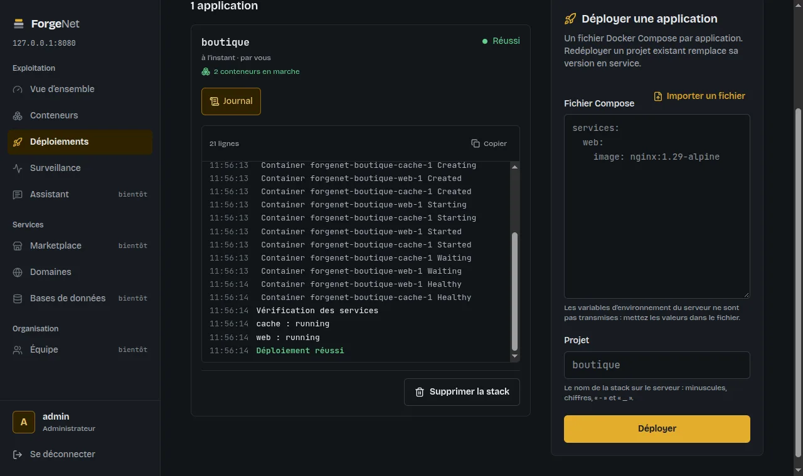
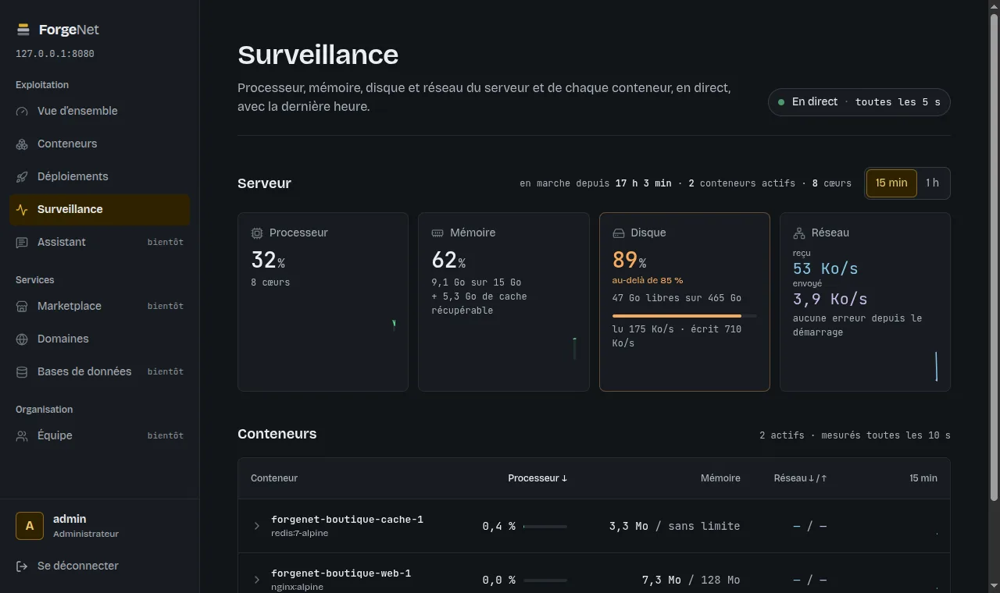
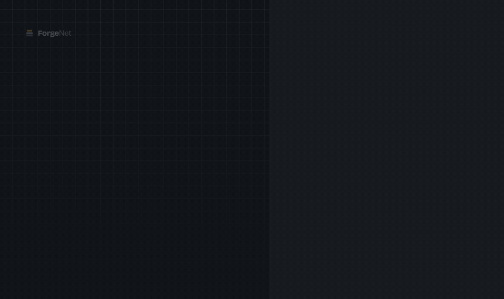
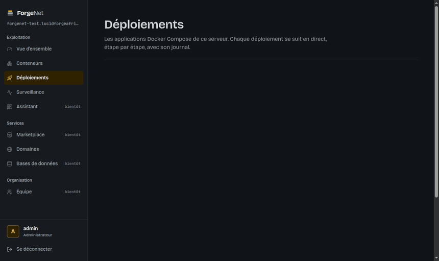

Déployer une stack Compose
Collez votre fichier, suivez chaque étape en direct avec son journal. Les déploiements passent en file, un à la fois.

Déployez vos stacks Docker Compose avec HTTPS automatique sur n'importe quel VPS Debian ou Ubuntu, sans dépendance cloud.
$ curl -fsSLO https://raw.githubusercontent.com/forgelab-dev/lfa-forgenet/v0.4.0/deploy/install.sh $ less install.sh # relisez un script avant de le lancer en root $ sudo bash install.sh --domain forgenet.exemple.org
Mesuré le 14 novembre 2026 : 36 secondes sur un VPS vierge (Ubuntu 24.04, 2 vCPU), installation de Docker comprise.
Inspecter le script install.sh avant exécutionInstalle Docker s'il manque, depuis le dépôt officiel, clé vérifiée.
Démarre le serveur et Caddy dans des conteneurs durcis.
Crée le premier administrateur, puis vous ouvrez le dashboard.
Collez votre fichier, suivez chaque étape en direct avec son journal. Les déploiements passent en file, un à la fois.

Un domaine par service, certificat Let's Encrypt et redirection HTTPS par Caddy.
Rôles administrateur et membre, tentatives de connexion limitées, journal d'audit.
Une nouvelle version s'annonce dans le dashboard. Elle s'installe après une sauvegarde, sur une image signée par cosign, avec retour automatique si elle ne démarre pas.
cosign verifyFlux compressés, reprise après coupure, pause quand l'onglet est caché.
Processeur, mémoire, disque et réseau en direct, avec la dernière heure. Une alerte visuelle dès 85 % de mémoire ou de disque.


Connexion, déploiement d'une stack de deux services, puis leurs mesures en direct, sur un VPS de test à Madrid. Rien n'est simulé.
Sur un vrai VPS : la boutique est déployée, son domaine est ajouté depuis le dashboard, et Caddy obtient son certificat Let's Encrypt cinq secondes plus tard.

Pour les contextes où la bande passante et le budget comptent, et où les données doivent rester chez soi.
Le dashboard, l'API et les mesures tournent chez vous. Aucune télémétrie, aucun service tiers pour afficher l'interface.
Flux compressés et reprise propre aujourd'hui. Le mode dégradé, avec file d'attente des commandes hors ligne, est en route.
Un assistant propulsé par Ollama, qui lit vos journaux sur la machine elle-même, sans appel à une API externe.
Import des projets Coolify, CapRover, Dokploy et Portainer, à partir de leurs fichiers existants.
Le projet est en développement actif. Testez-le sur un serveur de pré-production et partagez vos retours.